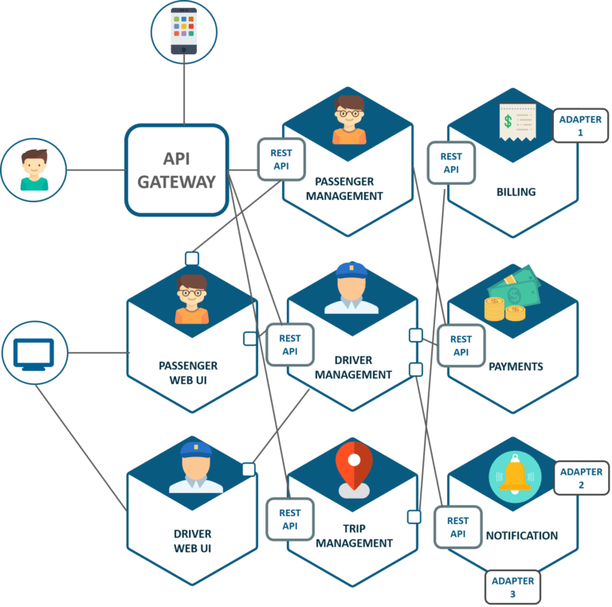
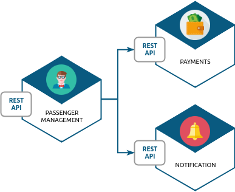
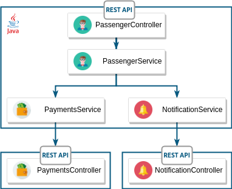
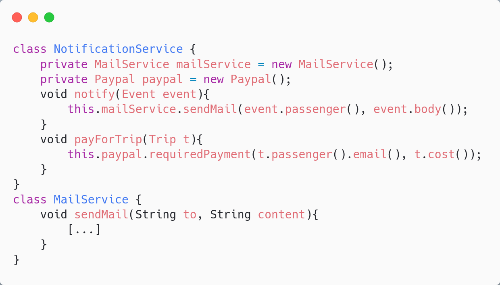
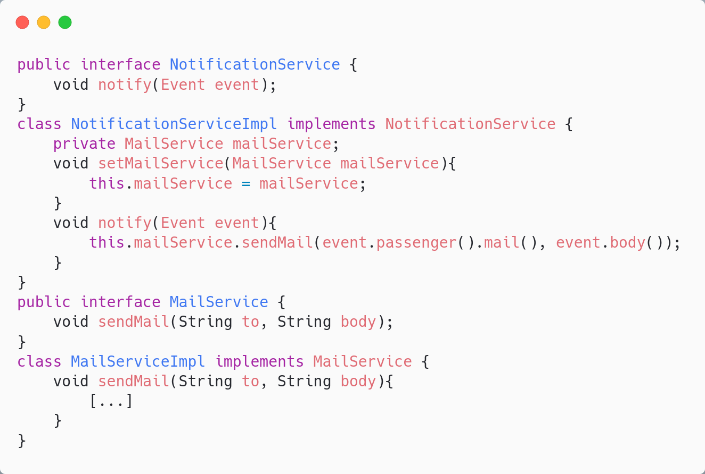
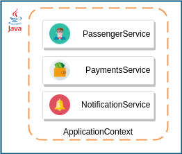
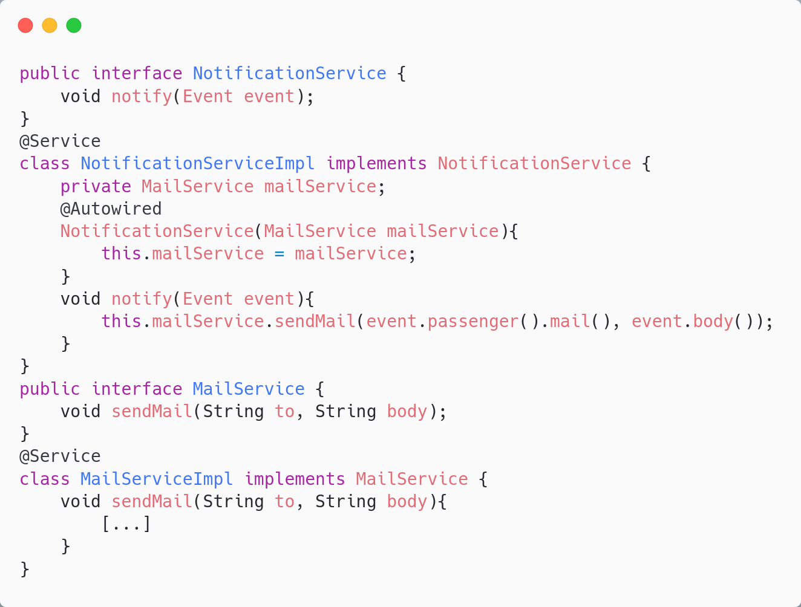

ALOM

UBER
Un micro-service c'est :
- Un ensemble de fonctionnalités du même domaine métier
-
Un ou plusieurs canaux de communication
- HTTP - REST/JSON
- Une source de données dédiée

🔎 un micro-service Java
On s'appuie sur les technologies connues: les servlets !

Spring dans tout ça?

Décomposé en sous-projets
- spring-boot-starter-parent : projet principal, gestion des dépendances
- spring-boot-starter-web : construction d'API REST/JSON
- spring-boot-starter-mvc : construction d'IHM
- spring-boot-starter-data-jpa : connexion à des bases de données
💉 Dependency injection
🚗 un morceau d'UBER
🏗️ La vision architecture
🤔 Le code du NotificationService
❓ Quel est le problème de ce code?
👮 S.O.L.I.D principles
- S : Single Responsability Une classe doit avoir une seule responsabilité
- O : Open/Closed Ouvert à l'extension, mais fermé à la modification
- L : Liskov Substitution Pouvoir utiliser un sous-type
- I : Interface Segregation Présenter plusieurs interfaces spécifiques
- D : Dependency Inversion Dépendre d'abstractions, et non d'implémentations
👮 Is it S.O.L.I.D ?
| S | ❌ |
| O | ❌ |
| L | ❌ |
| I | ❌ |
| D | ❌ |
🚑 Refactoring !

| S | ✅ |
| O | ✅ |
| L | ✅ |
| I | ✅ |
| D | ✅ |
ℹ️
Rendre notre code S.O.L.I.D :
- Le rend testable
- Le rend compatible avec de l'injection de dépendances
💉 Injection de dépendance
Laisser la plateforme fournir les dépendances:
- En fonction du contexte
- En fonction des composants disponibles
Nécessite des efforts de conception objet!
💉 Injection de dépendances avec
💉 Injection de dépendances avec
spring-core : découpage de l'application en "beans" = composants
Fournit un mécanisme d'injection de dépendance
- Inversion de contrôle (gestion du cycle de vie des beans)
- Injection de dépendances
Application context
Notre service de notification
TP

Fin du cours
Cours suivant :
Persistance des données avec JPA